채널: 레디포그로스 (Ready For Growth) | 길이: 27:00 | 날짜: 2026-02-03
3포인트 필터, 40분 타이머 강제 종료, 손실 리프레이밍(예산 30% 학습비용화). 이 3개를 통해 작업기억 과부하를 줄이고, 탐색 중독(새 키워드 찾기 도파민 루프)을 끊고, 발주 버튼 공포를 낮추도록 설계합니다. 즉, 분석 품질 향상이 아니라 “결정 구조 설계”를 하라는 접근입니다.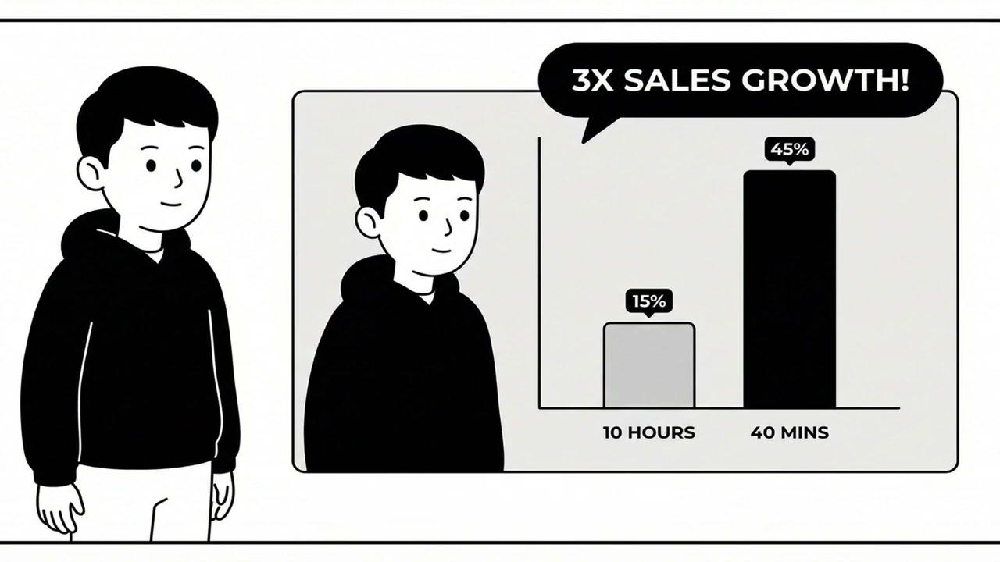
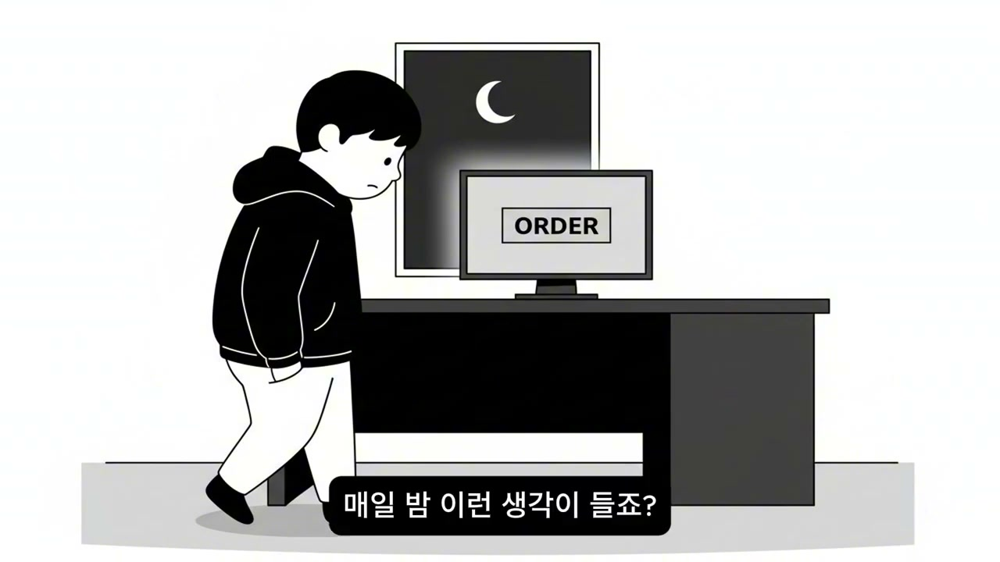
화자는 시작부터 상위 5% vs 하위 90%의 차이를 자본금·소싱능력이 아닌 “첫 발주까지 걸리는 시간”으로 규정합니다. 수치 메시지는 명확합니다: 상위 5%는 평균 40분, 하위 90%는 10시간 이상, 그리고 40분 내 결정 그룹의 매출이 3배 더 높다고 제시합니다.
화면도 이를 직접 시각화합니다. 3X SALES GROWTH!, 10 HOURS(15%) vs 40 MINS(45%) 막대그래프가 등장해 시간-성과 프레임을 고정합니다.
이어 “밤새 툴·계산기·리뷰를 오가다 결국 발주 못 하고 컴퓨터를 끄는” 전형적 패턴을 소환하고, 2023년 글로벌 기업 임직원 14,000명 연구에서 72%가 데이터 과잉으로 의사결정 불가 경험을 보고했다고 연결합니다. 즉 개인 문제가 아니라 보편적 인지 문제라는 진입 설계입니다.
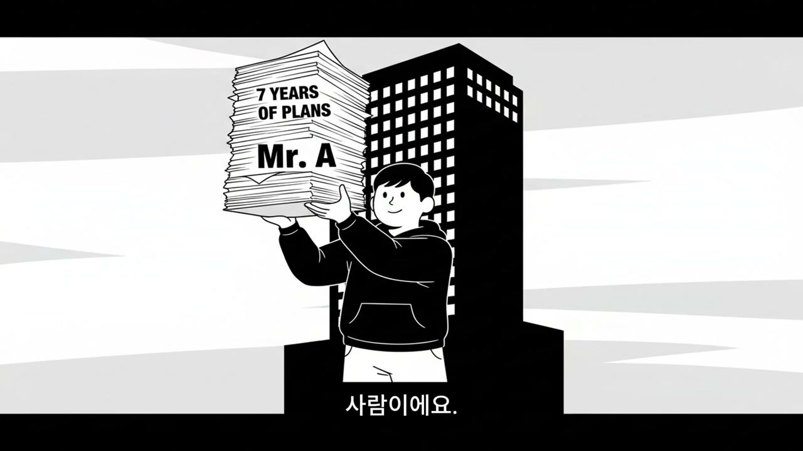
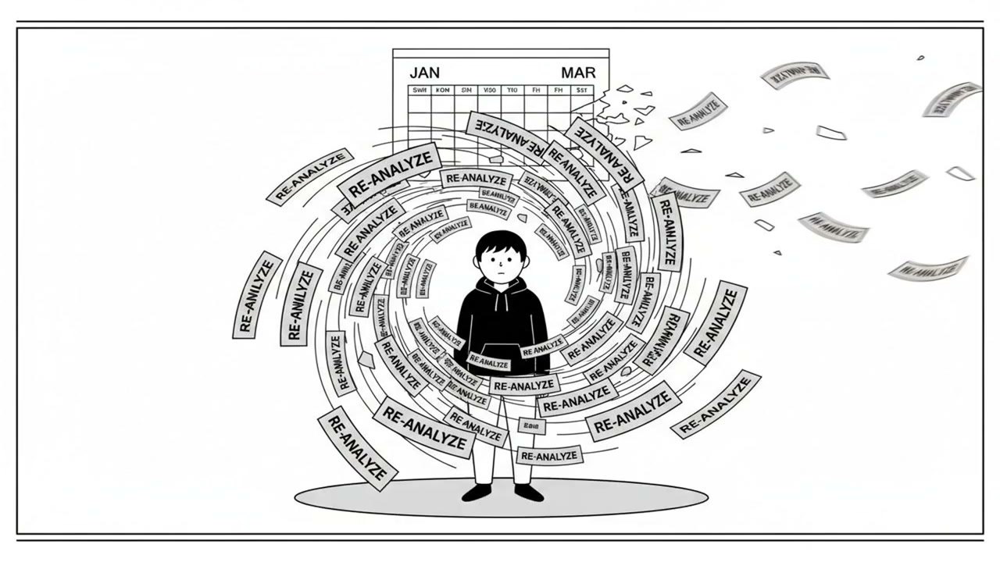
화자는 AC를 “백의업(BCG로 해석 가능한) 기획팀 출신, 7년간 사업계획·시장분석 문서 작성, 숫자·논리·엑셀·ROAS 공식에 강한 인물”로 설정합니다. 2025년 초 쿠팡 로켓그로스에 진입했으며 첫 달 80개 소싱 후보를 만들고, 상품별 예상 마진율/경쟁강도/시즌성/반품리스크 포함 10개 이상 항목을 점수화했습니다.
문제는 실행 구간입니다. 1순위→2순위→3순위 리스크 발견→다시 1순위 회귀, 그 사이 경쟁 셀러 증가로 원점 재분석을 반복해 3개월이 소모됐습니다.
결과 수치도 강합니다: 엑셀 시트 20개+, 분석시간 200시간+, 발주 0건. 화자는 이를 “사업체질 부족”이 아니라 “뇌가 함정에 빠진 상태”로 재해석합니다.
시각적으로도 7 YEARS OF PLANS Mr.A, RE-ANALYZE가 소용돌이처럼 반복돼 ‘재분석 루프’를 강하게 각인시킵니다.
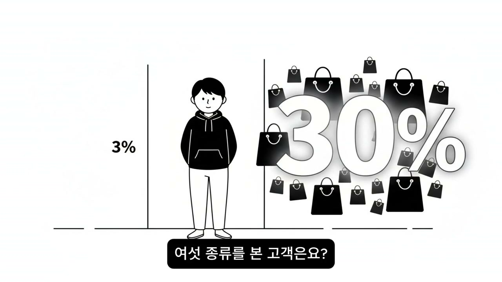
2000년 컬럼비아대 시나 아이엔가(Shena Iyengar) 잼 실험이 핵심 근거로 제시됩니다. 24종 진열군 구매전환 3%, 6종 진열군 구매전환 30%로, 선택지가 줄면 구매율이 10배 높아졌다는 논지입니다.
화자는 이를 쿠팡 소싱에 그대로 맵핑합니다. AC의 선택지 80개는 뇌 처리 한계를 10배 이상 넘긴 상태였고, 따라서 결정 포기 반응이 정상적으로 발생했다는 것입니다.
화면도 JAM EXPERIMENT, 6 JARS 간판과 쿠팡 표식 화살표를 함께 보여, 심리학 실험 원리를 소싱 실무로 직결시키는 연출을 합니다.
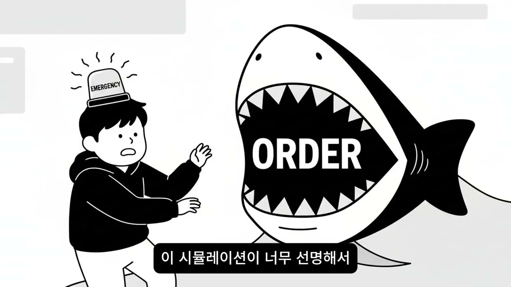
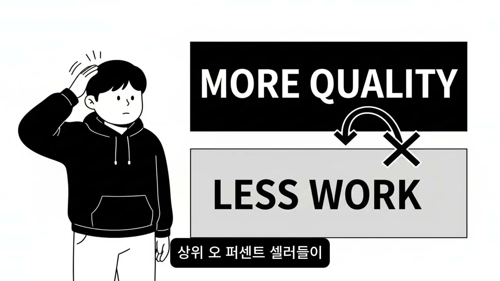
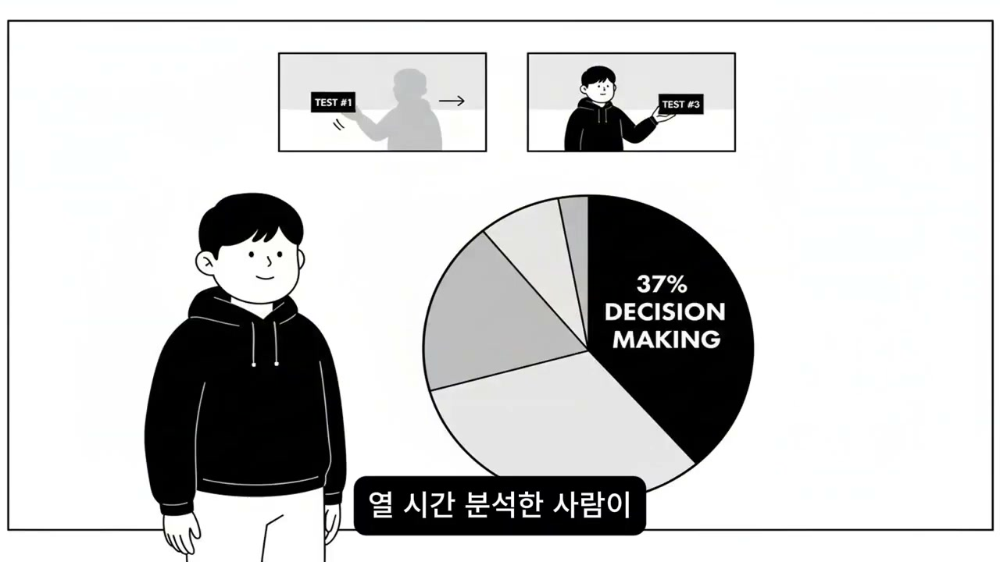
2010년 칼텍 신경과학팀 근거로 편도체(amygdala)의 손실 회피 반응을 설명합니다. 핵심 메시지는 “분석 능력이 높을수록 잠재 손실 시뮬레이션이 더 생생해져 공포 반응이 정교해진다”는 역설입니다.
그래서 재고 적체·마이너스 통장·주변 시선 같은 장면을 머릿속에서 강하게 재생하게 되고, 발주 버튼이 실제 위험과 동일하게 체감됩니다. AC는 3개월간 비상 상태였고 스트레스 호르몬 만성 분비로 전전두엽 실행 기능이 마비됐다는 서사가 제시됩니다.
세그먼트 7~8에서는 중요한 전환이 나옵니다. 상위 5%가 40분 내 결정하는 이유는 덜 분석해서가 아니라 “분석의 종료지점을 먼저 설계”하기 때문이며, 하위 90%는 완벽정보 탐색에 머문다는 대조입니다.
또한 상위 5%의 첫 상품 성공률이 하위 90%보다 크게 높지 않음에도 매출이 3배 나는 이유를 “실패를 더 빨리하고 더 많이 시도하기 때문”으로 정의합니다. 2019년 맥킨지 수치(업무시간 37%를 의사결정에 사용, 그중 61% 비효율)도 여기서 등장합니다.
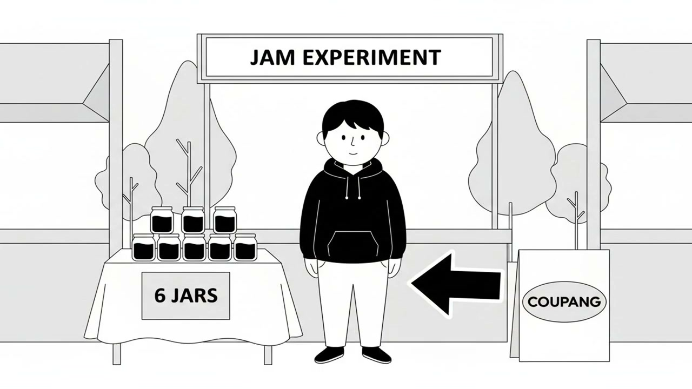
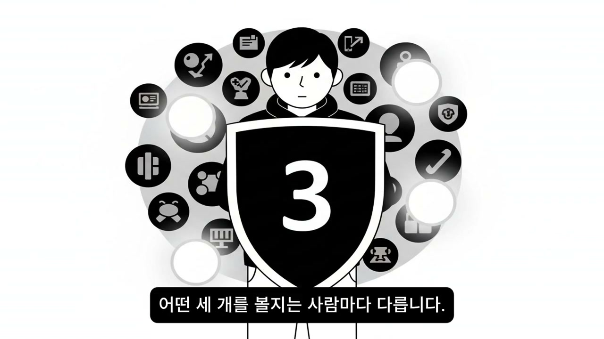
첫 번째 회로는 정보 차단 시스템입니다. 화자는 소싱 시 실제 확인항목이 10개 이상(마진율, 경쟁상품수, 검색량, 리뷰수, 반품률, 시즌성, 배송비, 공급가 변동성, 카테고리 수수료, 광고단가 등)으로 늘어나기 쉽다고 짚습니다.
하지만 뇌 작업기억 용량은 평균 4~7개이며(밀러의 법칙, 7±2 언급), 10개+를 동시에 처리하면 뇌 RAM 과부하로 결정이 멈춘다고 말합니다.
해결책은 “무엇을 볼지보다 몇 개를 볼지”입니다. 상위 5%는 의도적으로 3개만 보고 나머지는 일부러 보지 않습니다. 안전 마진을 둔 3개 기준을 소싱 시작 전에 종이에 적어 고정하며, 이를 3-POINT FILTER로 명명합니다.
시각적으로 방패 숫자 3, 다수 아이콘 차단, MORE QUALITY / LESS WORK 역설형 도식이 반복 노출됩니다.
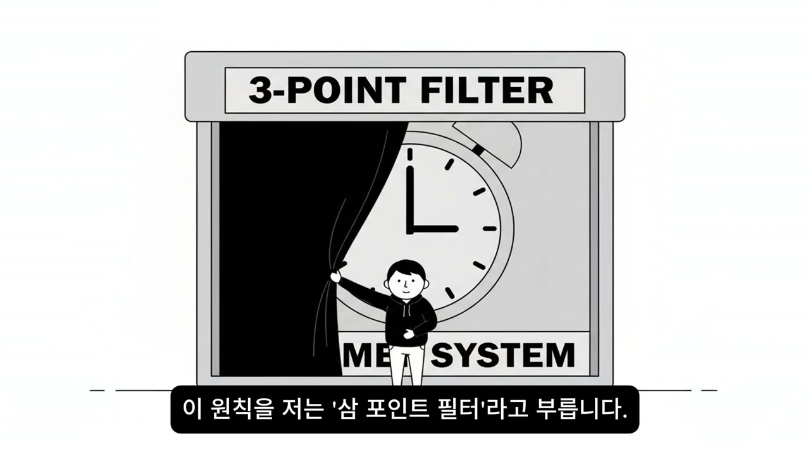
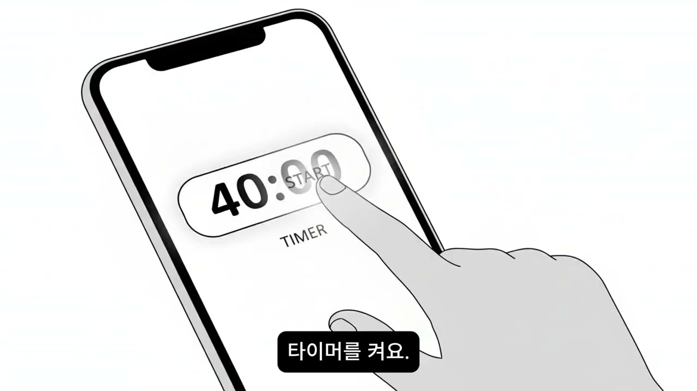
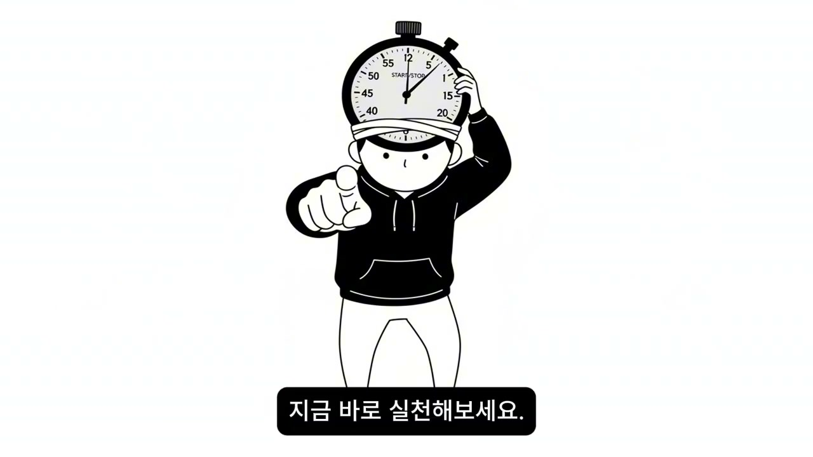
두 번째 회로는 타이머 강제 종료입니다. 2022년 파리 뇌연구소 발견으로, 인지적으로 힘든 작업이 길어질수록 전전두엽에 글루타메이트가 축적되어 피로·판단품질 저하가 온다고 설명합니다.
따라서 “오래 분석할수록 더 정확해진다”가 아니라 “일정 시점 이후 급격히 나빠진다”는 주장으로 전환합니다. 맥킨지에서도 의사결정에 더 오래 쓴 그룹이 품질 우위를 보이지 않았고, 오히려 빠른 결정 그룹이 장기 성과가 더 좋았다는 해석을 붙입니다.
화자는 소싱에서 임계점을 대략 40분~1시간으로 제시하며, 그 이후 분석은 탐색비용의 역설(얻는 이득보다 쓰는 시간·에너지가 커짐) 구간으로 규정합니다.
실천 규칙은 단순합니다: 휴대폰 타이머 40분 설정, 울리면 그 자리에서 결정. “내 느낌을 믿지 말고 타이머를 믿어라”가 핵심 문장입니다.
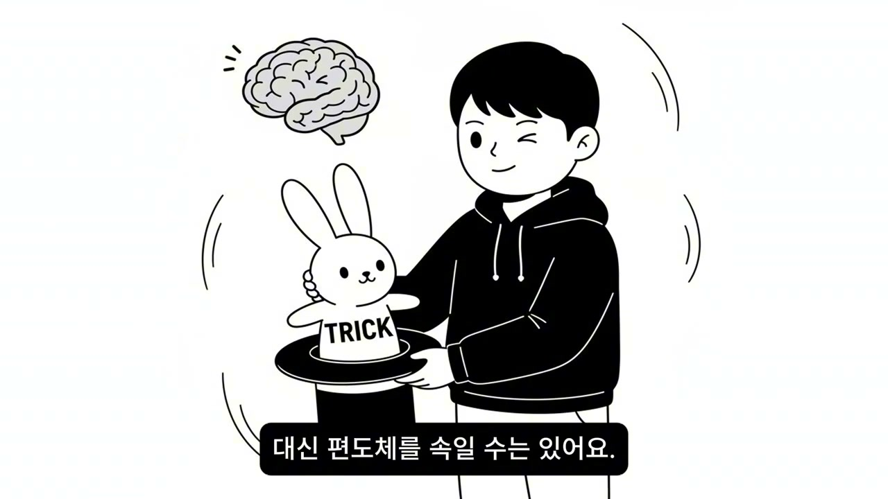
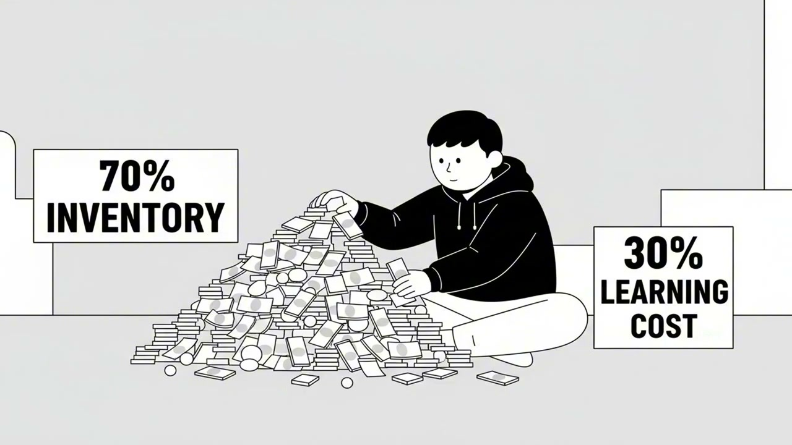
세 번째 회로는 손실 리프레이밍입니다. 뇌가 발주를 두려워하는 이유는 실패를 즉시 손실로 인식하기 때문이며, 편도체가 이 시나리오를 선제 재생해 행동을 멈춘다는 설명입니다.
화자는 2010년 칼텍 연구에서 편도체 손상 환자군의 손실회피 반응 소실을 언급하며(물론 실제 손상은 불가), 실무에서는 편도체를 “속이는” 프레이밍 전환이 대안이라고 제시합니다.
예시: 첫 발주 50만원 중 30만원 손해 발생 시, 하위 90%는 “30만원 잃음”으로, 상위 5%는 “30만원어치 시장 데이터 구매”로 해석한다고 대비합니다.
즉 실패를 비용이 아니라 학습자산으로 회계처리하는 인지 전환입니다.
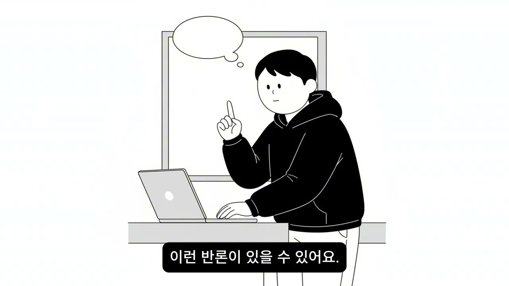
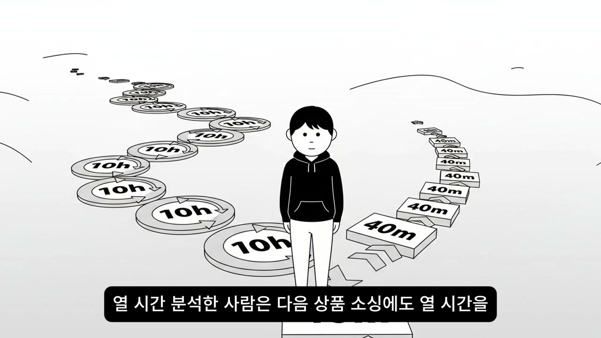
실무 적용은 예산 사전 분리입니다. 소싱 예산의 30%를 학습비용으로 미리 분류하라고 제안하며, 예시로 100만원 시작 시 30만원은 처음부터 “배움에 쓰는 돈”으로 심리적 분리합니다.
쿠팡 로켓그로스 평균 총비용(판매수수료·물류비·보관료·반품비 포함)이 판매가의 20~30%라는 점도 함께 언급해, 원래 비용 구조 자체가 학습비를 내재한다는 맥락을 만듭니다.
이어 나올 반론(“더 분석하면 실패 확률이 더 줄지 않나?”)을 정면으로 다룹니다. 답은 “의사결정 시간 증가와 품질 향상은 유의미하게 비례하지 않는다”이며, 대신 실행 속도와 장기 누적 성과가 갈린다는 것입니다.
시각적으로 70% INVENTORY / 30% LEARNING COST, 그리고 10h 루트 vs 40m 루트를 분기된 길로 표현합니다.
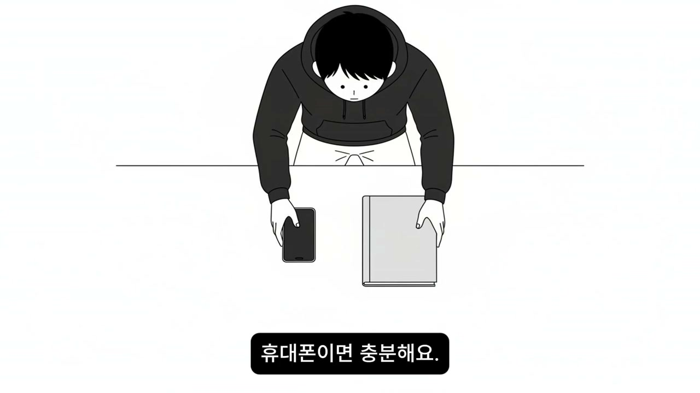
핵심 수식은 간단합니다. 상품 1개당 성공확률이 크게 차이 없으면, 성과를 가르는 변수는 분석시간이 아니라 시도 횟수입니다.
영상은 1년 누적 예시로 40분 그룹은 평균 20개+ 테스트, 10시간 그룹은 평균 4~5개 테스트에 머문다고 제시합니다.
습관화도 강조합니다. 10시간 의사결정 습관은 다음 상품에도 10시간을 반복하고, 40분 습관은 계속 40분으로 반복되어 복리처럼 격차를 키운다는 논리입니다.
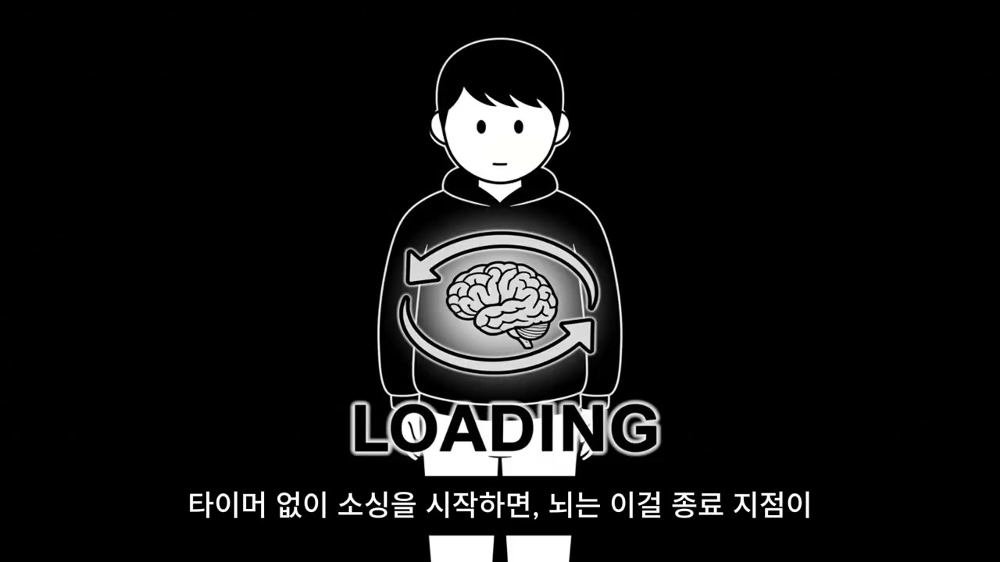
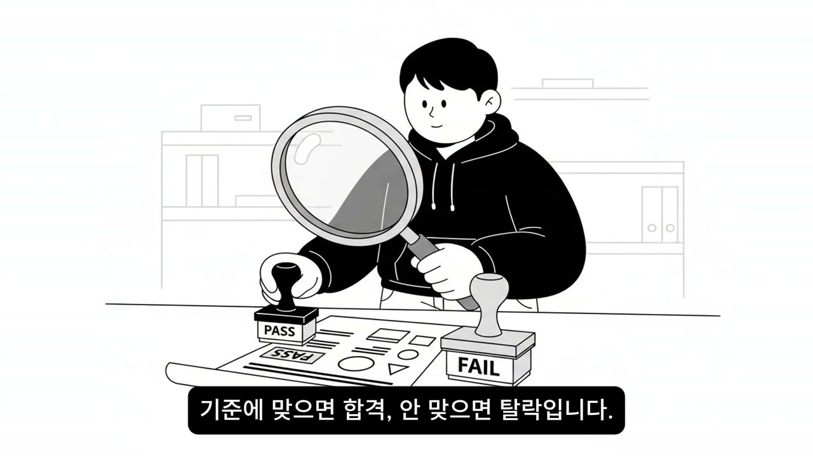
프로토콜 준비물은 3개입니다: 타이머(휴대폰이면 충분), 메모장(노션/종이 무관), 사전 확정된 3포인트 기준. 이 기준 없이 시작하면 100% 분석 마비에 빠진다고 강하게 경고합니다.
0~5분: 타이머 40분 설정 후 시작 버튼을 누르고, 쿠팡 Wing에서 관심 카테고리 키워드를 봅니다. 규칙은 단 하나, 키워드는 3개만 고르고(처음 눈에 들어온 3개), 메모 후 즉시 다음 단계로 이동.
5~15분: 키워드 3개를 쿠팡에서 각각 검색하되 첫 페이지만 훑습니다. 미리 정한 3포인트 기준 충족 여부만 합격/탈락으로 체크하고, 합격 키워드가 없으면 그중 가장 가능성 높은 하나를 선택합니다.
완벽 키워드 재탐색 금지, 새 키워드 확장 금지 규칙도 이 구간의 핵심입니다.
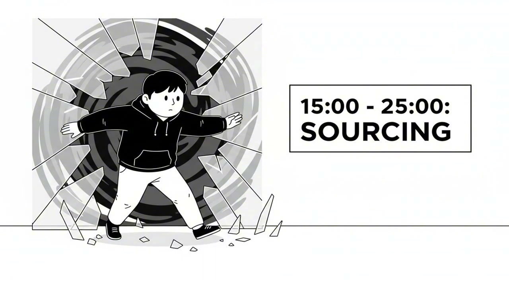
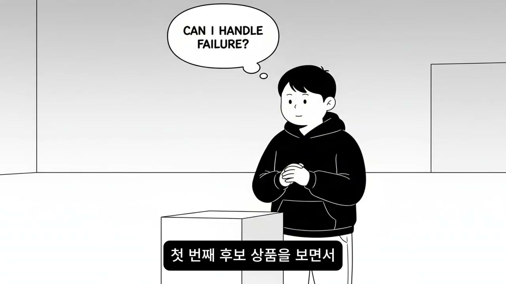
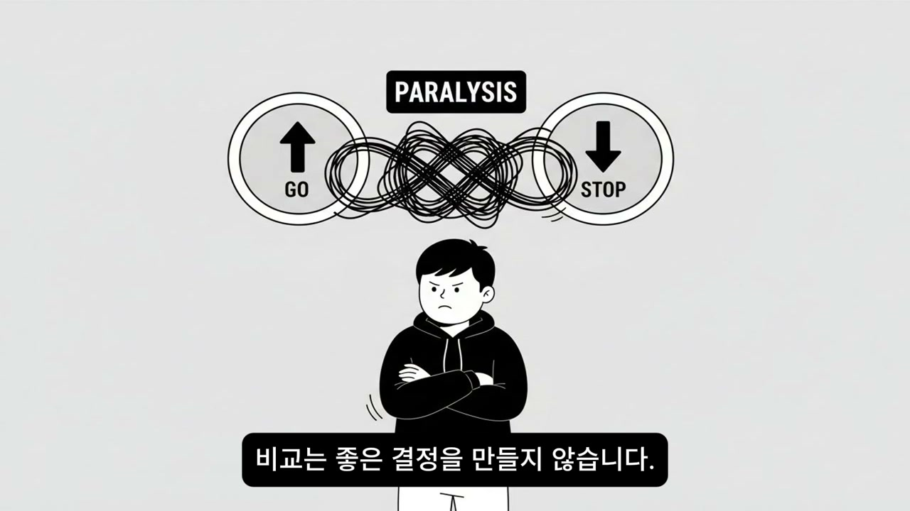
15~25분: 합격 키워드로 알리바바/도매사이트에서 공급상품 탐색. 여기서도 첫 페이지만, 최대 5개만 보고, 동일 3포인트 기준으로 후보 등록. 메모는 상품명+핵심정보 2개만 쓰고 상세기록 금지(상세 기록이 재분석 모드 유발).
또한 “다른 키워드 찾으면 더 좋은 기회가 있을 것 같다”는 생각은 도파민 시스템이 만드는 환상이라고 설명합니다. 검색 행위 자체가 도파민 보상을 주어 ‘탐색만 계속하고 발주를 미루는 패턴’을 강화한다는 진단입니다.
25~35분: 후보 중 1개 선택 단계. 가장 중요한 원칙은 비교하지 않기이며, 후보 A/B/C를 서로 최적화 비교하면 끝없는 trade-off 루프에 들어간다고 말합니다.
대신 각 후보를 독립 평가하고 질문은 하나만 씁니다: “이 상품으로 테스트했다가 실패해도 내가 감당 가능한가?” 예스면 선택, 노면 패스 후 다음 후보로 이동.
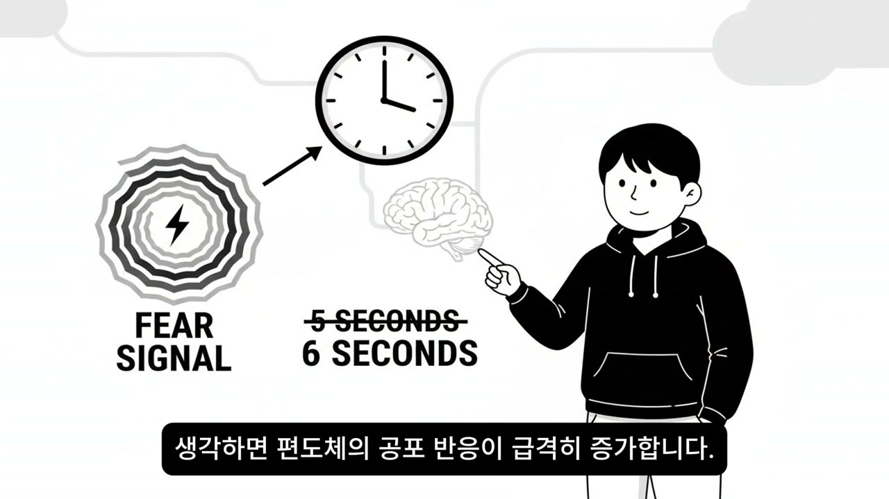
35~40분: 최종 선택 상품 발주. 이때 마지막 저항(“진짜 이대로 발주해도 되나?”)이 올라오며, 대응법으로 눈 감고 5까지 센 뒤 즉시 클릭을 제시합니다.
근거 설명은 행동 직전 5초 이상 지체하면 편도체 공포반응이 급증하고, 5초 이내 행동하면 전전두엽 억제가 유지된다는 구조입니다.
화면도 FEAR SIGNAL, 5 SECONDS 취소선, 6 SECONDS 강조 등으로 “지체 1초 차이”를 시각화합니다. 타이머가 울렸는데 미완료여도 발주하라는 강한 행동 명령으로 마무리됩니다.
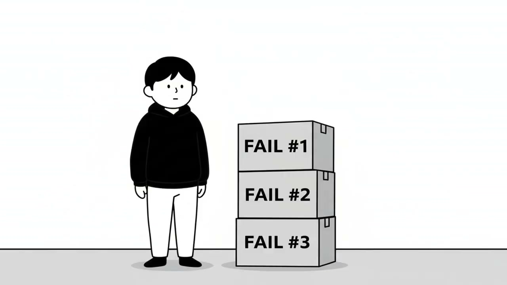
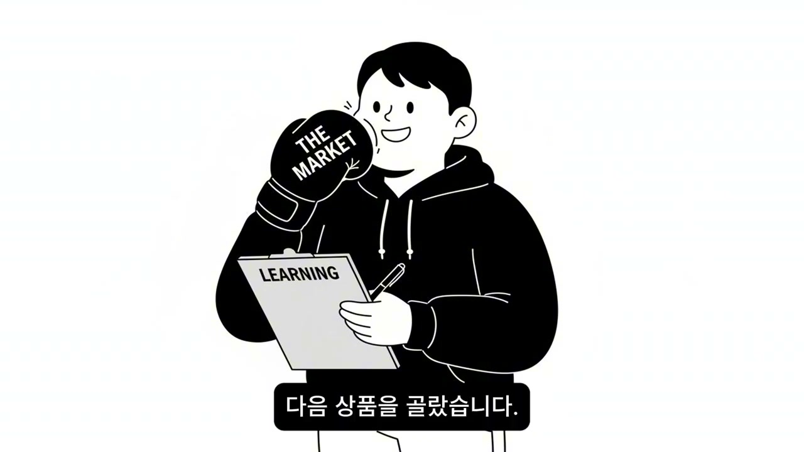
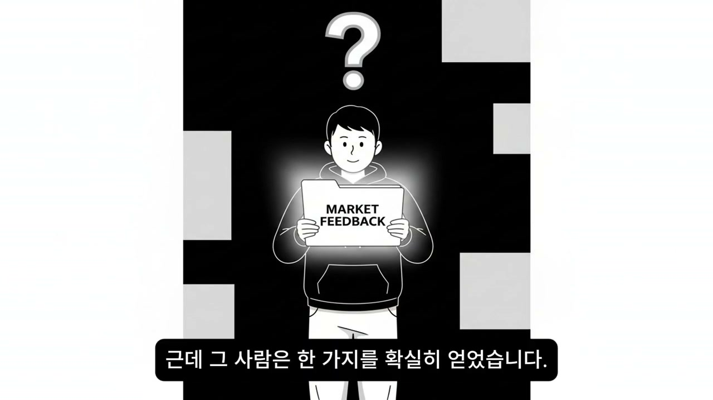
화자는 프로토콜 3회 반복 시 4회차부터는 타이머 없이도 40분 결정을 할 수 있다고 말하며, 이를 신경가소성(반복 행동의 기본값화)으로 설명합니다.
동시에 현실적 경고도 줍니다: 빠른 결정이 항상 좋은 결과를 보장하진 않으며 첫·둘·셋째 상품까지 실패할 수도 있습니다. 핵심은 실패 유무가 아니라, 실패를 통해 시장 피드백을 획득해 다음 선택 정확도를 높이는 루프를 돌리는 것입니다.
화자 본인도 과거 완벽분석형이었고, 며칠 분석해 고른 “완벽한” 상품이 처참히 망한 경험(재고 적체·광고비 소진)을 밝힙니다. 그 실패 덕분에 분석이 실행을 대체할 수 없다는 사실을 학습했다고 말합니다.
결정적 문장: 시장은 엑셀 파일에 피드백을 주지 않고, 발주한 상품에만 피드백을 준다.
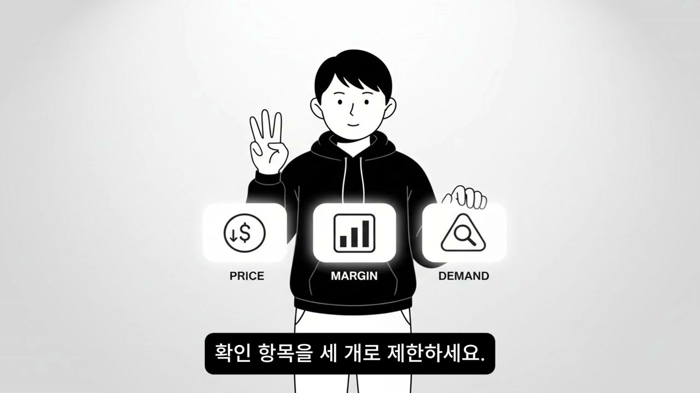
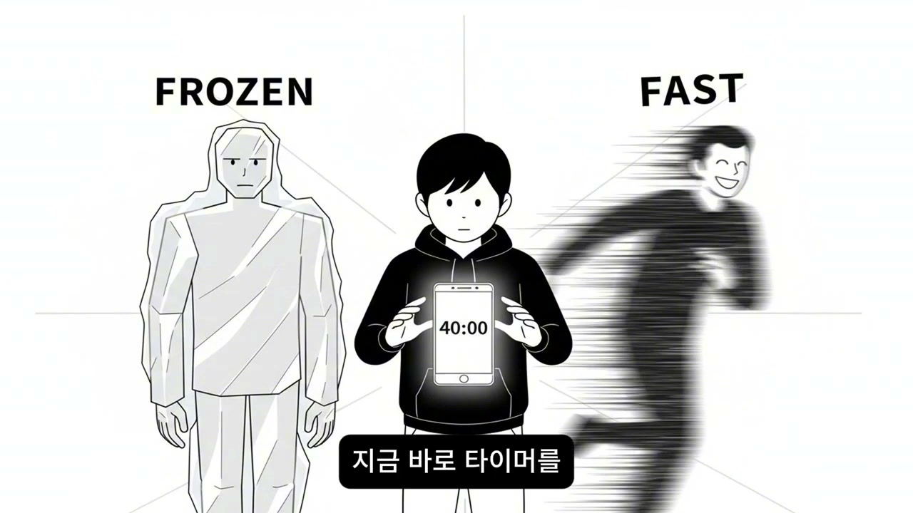
마지막 요약은 5개 행동 원칙으로 압축됩니다. 분석시간≠성공확률, 3포인트로 항목 제한, 40분 타이머 강제 종료, 실패=데이터 구매(예산 30% 학습비용), 발주 전 5초 카운트 후 즉시 클릭.
화면에서도 PRICE / MARGIN / DEMAND, FROZEN vs FAST, 40:00를 병치해 “멈춤과 실행”의 대비를 직관적으로 각인합니다.
최종 선택 프레임은 이분법입니다: 영상 끄고 다시 분석 루프로 돌아갈 것인가, 아니면 지금 타이머 40분을 맞추고 시작할 것인가.
엔딩은 후자를 선택한 사람을 위한 다음 영상 예고와 구독 요청으로 닫습니다.
이 영상의 본질은 소싱 기술 강의라기보다 “의사결정 운영체제 교체”에 가깝습니다. 화자는 분석 자체를 부정하지 않지만, 무한 분석은 성과를 만들지 못하고 실행 주기를 늦춰 누적 기대값을 깎는다고 봅니다.
실용적 시사점은 명확합니다.
첫째, 판단 기준을 늘리지 말고 3개로 고정해 인지 부하를 통제해야 합니다.
둘째, 시간 제한(40분)을 외부 장치로 강제해 탐색비용 역설 구간 진입을 차단해야 합니다.
셋째, 실패 회계를 “손실”에서 “학습 데이터 투자”로 바꿔 편도체 공포를 낮춰야 합니다.
넷째, 성과는 한 번의 완벽 선택이 아니라 반복 횟수와 피드백 루프 속도에서 나온다는 점을 받아들여야 합니다.
종합하면, 이 영상은 쿠팡 셀러에게 “더 정확한 예측자”가 아니라 “더 빠른 실험가”가 되라고 요구합니다. 그리고 그 전환을 가능하게 하는 최소 행동 프로토콜(3포인트, 40분, 5초 클릭)을 구체적으로 제시했다는 점이 가장 큰 실전 가치입니다.
댓글
GitHub 이슈 기반 댓글 시스템입니다.